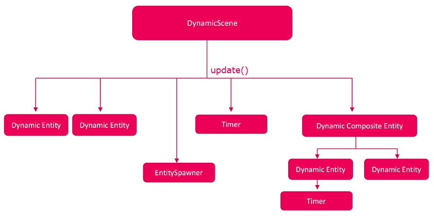

YAEGER_
Yaeger is Another Education Game Engine Runtime, and a fully functional 2D game-engine that requires only a traditional Object-Oriented style of programming. To create a game, classes should be extended and interfaces should be implemented.
Its API is based on inheritance and composition and can be seen as a layer of abstraction on top of JavaFX. JavaFX is only exposed minimally, so it is not trivially possible to use JavaFX within Yaeger. This is by design.
Required Java version
Although Yaeger only exposes a traditional Object Oriented API, internally its based on modern Java. To see which specific version is required, please read the readme on the project GitHub.
Howto read this manual
This manual is only meant to give a high-level overview. It will paint a picture of how a game can be created and what kind of objects are available. The details and specifics will not be part of this manual. They can be found in the JavaDoc API.
Creating a game
To create a new Yaeger Game, a Java class should be created that
- extends
YeagerGame - contains the following method:
public static void main(String[]args){
launch(args);
}
Such a game does not have any content yet, but it can be run and will only show the Splash screen. This Splash screen will be shown before each Yaeger Game. It can, however, be disabled by adding a commandline argument when running your game. More information on this can be found here.
Lifecycle methods of YeagerGame
By extending YeagerGame, several methods will need to be implemented.
These methods are part of the lifecycle of a Yaeger Game and will be responsible
for setting up the content of the Game.
Setting up the game, through setupGame()
The first method to implement is setupGame(), which has the following s
ignature:
@Override
protected void setupGame(){
}
This method will be called first and must be used to set up the width/height and title of the Game. A typical implementation can look like:
@Override
protected void setupGame(){
setGameTitle("Waterworld");
setSize(new Size(800,600));
}
For more information, check the
API
of setupGame()
Adding Scenes, through setupScenes()
After setupGame() has been called, Yaeger will call setupScenes(). This is
the second step in the life cycle of a Yaeger Game, in which it expects the
developer to add Scenes to the Game. Scenes can be added by calling
addScene(int, YaegerScene). The first parameter is the id of the
YaegerScene, which can be used to select which YaegerScene will be shown.
By default, the first scene that is added, will be the first scene that is
shown.
A typical implementation can ook like:
@Override
protected void setupScenes(){
addScene(0, new TitleScene(this));
addScene(1, new GameLevel(this));
addScene(2, new GameOverScene(this));
}
Loading a scene
When adding scenes to the Yaeger Game, the first added scene will also be the
one that gets loaded and becomes visible. To load a specific scene,
YaegerGame provides the method setActiveScene(int). Read
the API
for the details on how to use this method.
What about the constructor?
For Plain Old Java Objects (POJO’s) the constructor is usually used for configuring your Object. Although it is not always the best approach, since the constructor should be only used for constructing an Object, not for configuring it, it will usually still work.
With Yaeger, however, it will usually not work. Configuring a YaegerGame
should only be done from the setupGame() method. Furthermore, the
constructor of the class that extends YaegerGame should be empty, since Yaeger
will otherwise not know how to make an instance of it.
Scenes aka levels
After scenes have been added, Yaeger will load the first one. In this chapter we will dive deeper into them.
What are scenes?
A game is usually comprised of different ‘parts’, such as levels, menu’s or a game-over screen. Some of those are just simple images and other are complex levels, with lots of behaviour.
In Yaeger, all of them implement YaegerScene and will be referred to as a
Yaeger scene. For a simple Yaeger scene, without any moving parts, Yaeger
provides the abstract class StaticScene. In case of a complex scene, with
moving parts and a so-called Game World Update, Yaeger provides a
DynamicScene. Both can be added to Yaeger, since they both implement
YaegerScene. Their behaviour is, however, quite different.
StaticScene
A StaticScene is a scene that is not aware of time. It can contain anything
you like, and those things will listen to user interaction, but their behaviour
will not be based on the concept of time. Typical use cases are:
- A Menu
- A Game Over scene
- An inventory selection scene
DynamicScene
A DynamicScene is exactly the same as a StaticScene, but it is also aware of
time. A DynamicScene contains a Game World Update, that calls a
update(long) method on the scene itself and all dynamic parts of the scene.
This way, it is possible to create movement and add time-based behaviour.
Typical use cases are:
- A level for a game
- A Splash screen
- A scene with any form of animation
ScrollableDynamicScene
A ScrollableDynamicScene is exactly the same as a DynamicScene, but allows a
different width/height for its content. This way the scene can be much larger
that the viewable area (the viewport). The with and height of the scene can be
set from the setupScene() and the part of the scene that is visible can be set
by setting the scroll-position.
Creating a scene
To create either a StaticScene or DynamicScene, let your own scene extend
one of those. As when extending YaegerGame, again two methods will need to be
implemented:
setupScene(), which should be used for setting all the properties of the scenesetupEntities(), which should be used for adding various entities (Game Objects) to the Scene
Setting up the scene, through setupScene()
The first method to implement is setupScene(), which has the following
signature:
@Override
protected void setupScene(){
}
This method will be called first and must be used to set up the background image, background color and background audio of the scene.
A typical implementation can look like:
@Override
public void setupScene(){
setBackgroundAudio("audio/ocean.mp3");
setBackgroundImage("backgrounds/background1.jpg");
}
For more information, check the API
Adding entities to the scene, through setupEntities()
After setupScene() has been called, Yaeger will call setupEntities(). This
is the second step in the life cycle of a YaegerScene, in which it expects the
developer to add entities to the scene.
Entities can be added by calling addEntity(YaegerEntity). Since entities can
overlap, their placement will follow the order in which they are added to the
scene. So newly added entities may overlap entities that had been placed
earlier.
More on entities in the following chapter of this documentation.
A typical implementation can look like:
@Override
public void setupEntities(){
addEntity(new Hanny(new Coordinate2D(1,1),waterworld));
addEntity(new Swordfish(new Coordinate2D(200,300)));
addEntity(new Sharky(new Coordinate2D(0,100)));
}
What about the constructor?
The same rules apply to a YaegerScene, as do to a YaegerGame. Configuring
the scene should only be done from the setupScene() method.
It is however possible to use the constructor for basic wiring of objects or other commons object-oriented practices.
Entities aka Game Objects
Entities are what actually make a game. Anything that can be placed on a scene
will be an Entity and will have to (indirectly) implement the abstract
superclass YaegerEntity.
Static or dynamic entities
Just as with scenes, entities are available in static and dynamic version. The main difference is that a dynamic entity receives a GWU, where a static entity does not.
In general static entities will be typically used for menu-items or non-moving things. Dynamic entities are typically used for anything that should move around the scene, or should have time-based behaviour in general.
Note that the GWU originates at the scene. To make a dynamic entity to receive the GWU, it must be added to a dynamic scene. If added to a static scene, it will be as static as a static entity.
Properties for all entities
Although there a different entities, they all share a basic set of properties. These include the hue, saturation, brightness, rotation and many more. One of the more interesting properties is the viewOrder, which can be used to influence the order in which the entities are rendered on the scene. The lower the value, the closer the entity is placed to the front of the scene.
Movement of dynamic entities
Dynamic entities can move around the scene, by setting their motion. This movement is applied each GWU, which means the entity moves discretely across the scene (as opposed to continuously).
The motion consists of a direction and speed, which can be set
individually or together. The direction is a double, where the value 0
denotes downward and 180 logically means upward.
Different types of entities
There are several Entities available, which can be divided into four different types:
| Static Entity | Dynamic Entity | Type |
|---|---|---|
SpriteEntity | DynamicSpriteEntity | Sprite entity |
CircleEntity | DynamicCircleEntity | Shape entity |
EllipseEntity | DynamicEllipseEntity | Shape entity |
RectangleEntity | DynamicRectangleEntity | Shape entity |
TextEntity | DynamicTextEntity | Text entity |
CompositeEntity | DynamicCompositeEntity | Composite entity |
The sprite, shape and text-entity are basic entities. The composite entity is of a different type. It should be used whenever the entity should actually consist of several smaller entities.
Applying physics
Yaeger supports a basic form of physics for entities, through the
Newtonian interface. Since this form of physics is based on motion,
the interface makes only sense when applied to a dynamic entity.
Creating entities
All available entities, expect the TextEntity, are abstract classes, meaning
they should be extended to create an instance. After creating a class, an
instance should be created, which can then be added to a YaegerScene, or a
CompositeEntity through the addEntity(YaegerEntity) method.
In general, the setupEntities() is the appropriate place to do such a
thing, but it is possible to call addEntity(YaegerEntity) from methods such
as setupTimers() (see Timing things) or setupSpawners()
(see below).
Spawning entities at a regular time-interval
Sometimes many entities should spawn within a scene. For instance, when enemies spawn to life, or when it snows.
For such cases, Yaeger provides an EntitySpawner, which was designed for
specifically this case.
Creating many entities at once, using a TileMap
When many entities populate the scene, a TileMap can be used to easily
create them and to let Yaeger calculate the exact location where they should
be placed.
Imagine the image below should be used multiple times on the scene:
,
and should be placed in such a way that we get the following scene:
.
A TileMap facilitates this, by defining a two-dimensional array that
represents the scene and stating which entities should be used. The
TileMap will then calculate the location and size of each entity,
instantiate them and add them to the scene.
To be able to use a TileMap, the scene should implement the interface
TileMapContainer.
Entity collisions
Entities can interact with each other by using collision detection.
Collision detection is Yaeger is fairly simple. Each GWU checks if all
entities that implement Collider intersect with each entity that implements
Collided. If an intersection occurs, the method onCollision (List<Collider>) is called on the entity that implements Collided.
Because collision detection is performed on each GWU, which has a discreet value of 60 times/second, if entities move at a high speed, it is possible that collision detection misses their collision. This is currently a limitation of Yaeger.
Entities leaving the scene
Do be notified whenever an entity leaves the scene border, two interfaces are available:
SceneBorderCrossingWatcherSceneBorderTouchingWatcher
Their event handler will be called whenever an entity respectively leaves the scene border or merely touches the scene border. As with collision detection, also this checks is performed only on the GWU, meaning it will not be extremely accurate with fast moving entities.
User Input
A Player can interact with both Entities and Scenes by using the keyboard or mouse. To enable this interaction the Scene or Entity should implement the appropriate interface, after which an event handler should be implemented.
Available interactions
The table below gives the full list of interfaces that are available. They can
be found in package
com.github.hanyaeger.api.userinput and most can be applied to all children of
both YaegerEntity
and YaegerScene, only the MouseDraggedListener can only be applied to
children of YaegerEntity.
In case of a ScrollableDynamicScene, the instances of Coordinate2D that are
passed to the event handlers report the coordinates of the entire scene, not
only the viewport.
| Interface | EventHandler(s) |
|---|---|
KeyListener | void onPressedKeysChange(Set<KeyCode>) |
MouseButtonPressedListener | void onMouseButtonPressed(MouseButton, Coordinate2D) |
MouseButtonReleasedListener | void onMouseButtonReleased(MouseButton, Coordinate2D) |
MouseEnterListener | void onMouseEntered() |
MouseExitListener | void onMouseExited() |
MouseMovedListener | void onMouseMoved(Coordinate2D) |
MouseMovedWhileDraggingListener | void onMouseMovedWhileDragging(Coordinate2D) |
MouseDraggedListener | void onMouseDragged(Coordinate2D), void onDropped(Coordinate2D) |
MouseDragEnterListener | void onDragEntered(Coordinate2D, MouseDraggedListener) |
MouseDragExitListener | void onDragExited(Coordinate2D, MouseDraggedListener) |
MouseDropListener | void onDrop(Coordinate2D, MouseDraggedListener) |
Sounds
Sound are usually an important part of any game. A sound can be either an effect that is part of the game, or an audio-fragment that is being played at the background. Both cases are supported by Yaeger, but both require a different way to make them happen.
Background audio
Background audio can be set on either the YaegerGame or YaegerScene. In
both cases the audio will loop indefinitely until respectively the YaegerGame
has ended or a different YaegerScene is loaded. This way it is possible to
set background that will be used throughout the game, or is specific to a
YaegerScene.
Sound effects
When a sound effect should be played, a SoundClip can be used. It will only
be played once and as soon as it has finished it becomes eligible for garbage
collection. Although the volume of a SoundClip can be set, note that it is
only applied to the next time it is played. Thus, the volume has to be set
before play() is called.
Timing things
As can be read in Scenes aka Levels, there are two different
implementations of YaegerScene available: a StaticScene and a
DynamicScene. Their main difference resides in the fact that a DynamicScene
contains a Game World Update (GWU) to which all instances of DynamicEntity
added to the scene will listen.
This chapter will discuss the different ways in the GWU can be used within Yaeger. It will start by discussing how the GWU gets delegated to all objects, after which different ways to use in within your scene of entity.
How the GWU is delegated to all objects
The GWU is initiated by the DynamicScene, and handed down to all dynamic
entities that were added to the scene. This is done in the same order as in
which they were added to the scene.

Pausing and resuming the GWU
Since the GWU gets initiated at the level of the DynamicScene, and then
passed down, it is possible to pause all objects that are called by this
GWU. For this a DynamicScene provides a method to pause and resume the GWU.
Using a Timer to create time-based events
On both dynamic scenes and dynamic entities one or more timers can be used
to create time based events. To use such a Timer the scene or entity
should implement the interface TimerContainer. After doing so, the method
setupTimers() should be implemented and the method addTimer(Timer) can
be called to add an instance of Timer.
Exposing the GWU to scenes and entities
The GWU is kept internal on all entities and scenes and gets delegated
downwards. It is, however, possible to expose the GWU to an entity or scene by
implementing the interface UpdateExposer, which exposes an explicitUpdate (long) method. The value passed to this method represents a timestamp
of the current time and can be used to keep track of time.
Command Line Arguments
When run, Yaeger accepts command line arguments. These arguments are primarily meant for debugging your Game.
The following arguments are currently supported:
| Argument | Explanation |
|---|---|
| –noSplash | Skip the Splash screen during start up. |
| –showBB | Show the BoundingBox of all instances of YaegerEntity that implement either Collider or Collided. |
| –showDebug | Show a debug window with information about the Scene. More information on the debug window can be found here. |
| –enableScroll | Enable the scrolling gesture for all instances of ScrollableDynamicScene. This can help during the development process of such a scene. |
| –limitGWU | Limit the Game World Update (GWU) to a max of 60/sec. |
| –help | Show this help screen with all commandline options. |
Using command line arguments from an IDE
Since the command line arguments mainly focus on the development cycle, they will likely only be used during development of a Yaeger Game. In such a case you will be working in an IDE, which will also be responsible for creating a run configuration. Part of such a run configuration will be the (extra) arguments that can be passed to the application. So check the documentation of your IDE to see where these arguments can be entered.
Debugging a game
Yaeger provides a debugging dialog that shows information about the current
scene, and the machine it is running on. Since this dialog requires the
Game World Update to refresh itself, it gives little information on a scene that
extends StaticScene. But on a scene that extends DynamicScene it can give
insight.
To enable the debugging dialog, start you Yaeger game with the command line argument as shown in Command line arguments.
Processors and memory
When run, a Java-program allocates memory through the JVM, the Java Virtual Machine, which is part of the Java Runtime Environment (JRE). Depending on the number of Objects that make up the program, it then uses this memory. Since, during the lifecycle of a program, more and more Objects are created, you can see the total used memory increase. When some of these Objects are no longer used by the program, the memory they use gets cleared by the JVM. Hence, the total used memory periodically decreases.
If the total used memory reaches the value of total allocated memory, the program will come to a grinding halt.
Entities, suppliers and garbage
The debugger keeps track of the number of Entities that are present on the scene.
| Entity | Explanation |
|---|---|
| Dynamic Entities | Number of entities that extend DynamicEntity |
| Static Entities | Number of entities that extend StaticEntity |
| Suppliers | Number of objects that are able to supply entities to the scene. This means all instances of EntitySpawner, but also the Scene itself. |
| Garbage | Number of Entities that have been marked as garbage, by calling the remove() method. The will be removed from the Scene during the next Game World Update, which should result in a drop of total used memory |
| Key listening entities | Number of entities that implement KeyListener |
Loaded files
Image and audio files will probably make up most of Yaeger’s memory usage. To minimize this memory footprint, Yaeger reuses images if possible. Meaning, for entities that use the same image file, this image file gets loaded only once. The same goes for audio files. Because Yaeger tries to reclaim the memory if such a file is no longer used, the background audio does get added to the value in the debugger. As soon as it starts playing, Yaeger loses its reference to the loaded file, and it continues playing.
FAQ
This chapter will sum up known issues and solutions on how to bypass them. The list is likely not complete, so do feel free to share your findings.
Some of the issues noted here can be seen as bugs, but that does not mean they are easily resolved.
My MP3 file is not being played
For some reason, not all MP3 files are supported. If playing an MP3 file does not give any exceptions, but you can not hear it in game, it might be because the MP3 file is not supported. To correct this, use a tool to create an MP3 file that is supported.
An entity behaves strangely when colliding
Sometimes an entity behaves unexpected when colliding. For instance, it is set to change its direction on collision, but when this happens it doesn’t immediately do so. First it seems to stutter a few times, after which it finally behaves as expected.
This behaviour likely follows from the fact that the bounding box is used for
collision detection, and the bounding box is usually larger that the entity we
can see. Especially if the entity is a SpriteEntity containing a round image,
the bounding box is still rectangular. When this SpriteEntity is also
rotating, it is not unlikely that the angles of the rectangular bounding box
will again cause a collision on the Game World Update after the first collision.
Because of the second collision the entity will again change its direction and
this cycle can repeat itself until the entity no longer collides.
A workaround could be to use a CompositeEntity with a smaller hit box.
I use tile maps, timers and entities on the same scene, why not add everything in the setupEntities() method?
Each YaegerScene exposes the method setupEntities(), which should be used to
add instances of YaegerEntity to the scene. When tile maps are required, the
scene should implement the interface TileMapContainer, after which the
method setupTileMaps() gets exposed and the method addTileMap(TileMap)
becomes available. The same goes for timers through the interface
TimerContainer.
In a Scene where either tileMaps or timers are required, it is very well
possible to ignore the setupTileMaps() or setupTimers() methods and add
TileMaps or Timers from the setupEntities() method. It is however preferable
to use the appropriate method, to maximize readability. Scenes can grow rather
large and to find specific entities, tile maps or timers, it can help to group
them within their specific methods.